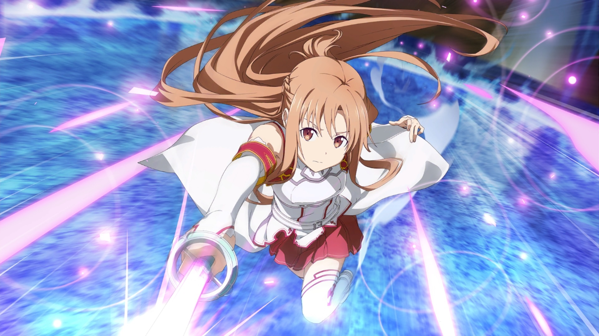
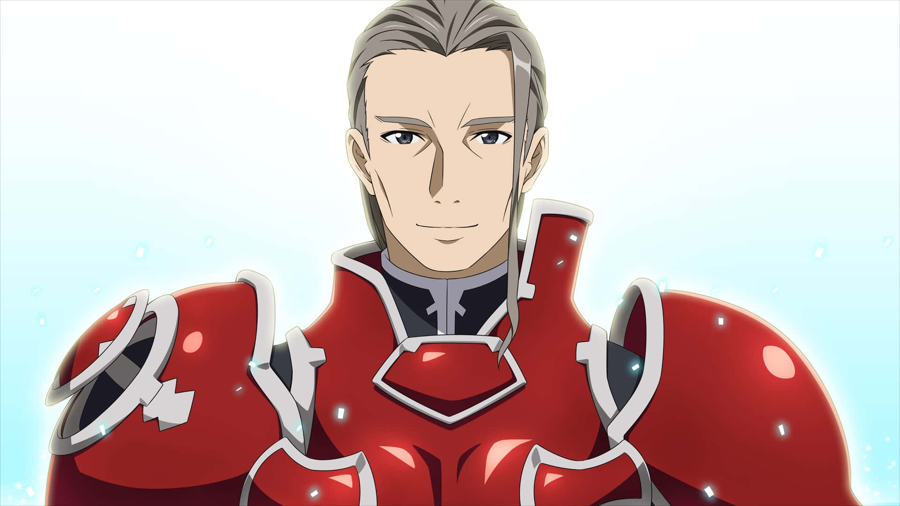
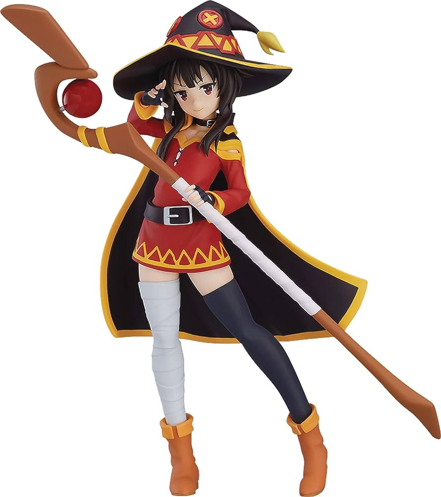
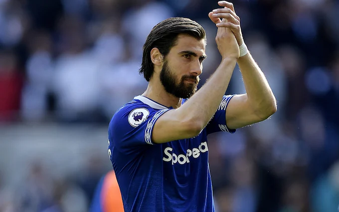

Kirito also known as the black swordsman because he would always wear all black with a black sword called the elucidator. He was one of 10,000 players to get trapped in the world of Sword Art Online and was a member of the assault team dedicated to clearing the game and freeing all the players. He gets called a "beater" meaning a beta tester and a cheater as a result of him being a beta tester. He falls in love with Asuna within the game and they get married in the game. When he finds out that Asuna is trapped within Alfheim Online from Agil, he dives into the world of Alfheim with the sole purpose of freeing his love. Once he has freed Asuna from the game they continue their relationship.

Asuna also known as lightning flash due to her immense speed was traped in Sword Art Online with Kirito. She becomes the second in command of the knights of the blood oath - the strongest guild within the game.She falls in love with Kirito and marries him in game. Once the game is beaten she is among 300 players trapped within Alfheim Online, another VRMMO, by the chief of research at RECT, the company who absorbed Kayaba's company once the SAO incident is over. Once free she continues her relationship with Kirito.

Heathcliff is the commander of the knights of the blood oath guild within Sword Art Online. He is also the final boss on floor 100 of Aincrad. Heathcliff uses a full length shield and a sword. He is also known as Akihiko Kayaba, the creator of Sword Art Online.
Bell Cranel was the lone member of the Hestia Familia in DanMachi or Is It Wrong To Pick Up Girls In A Dungeon. He is completely devoted to goddess Hestia despite numerous advances being made towards him from other goddesses. He single-handedly leads to the Hestia Familia growing.
Chris is a thief girl within the city of Axel in Konosuba. She is friendly with Darkness, the useless crusader and teaches Kazuma his first set of skills - Steal, Lurk and Enemy Detection. She is the human form of the goddess Eris when she wants to check in on the own of Axel or when she is just bored.

Her name is Megumin, the foremost mage in all the crimson demons and wielder of explosion magic. She refused to learn any spells until she had learnt explosion magic and since learning explosion magic she only wants to learn spells to buff her explosion. Due to the massive amount of magical power needed to cast explosion she is only ever able to cast it once per day and she is unable to move afterwards. As a result of this she keeps getting kicked out of parties until she joins up with Kazuma and Aqua.
The Seven Deadly Sins' goat sin of lust, Gowther is nothing more than a mere doll, created by Gowther of Selflessness of the ten commandments of the demon race. Gowther has the ability to tamper with the memories and feelings of people which he does numerous times in his quest to develop a heart.
Footballers

Andre Gomes is a portuguese midfielder who played for SL Benfica, Barcelona and Everton. Andre signed fr Everton initially on loan before they made his loan permanent for a whopping £22m. He was also a part of the Portuguese European Championship winning squad and has won various trophies all prior to signing for the Merseyside based club in 2019 on a 5-year contract which wasn't renewed making him a free agent on July 1st 2024. He suffered a horrific injury playing for Everton against Tottenham in the November of 2019 a mere few months into his permanent Everton career.